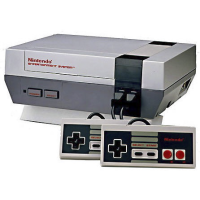
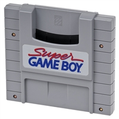
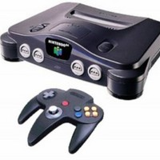
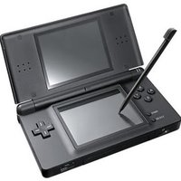
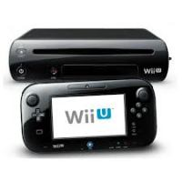

The Famous Nintendo Company
The worldwide pioneer in the creation of interactive entertainment, Nintendo Co., Ltd., of Kyoto, Japan, manufactures and markets hardware and software for its Wii U™ and Wii™ home consoles, Nintendo 3DS™ and Nintendo DS™ family of portable systems. Since 1983, when it launched the Nintendo Entertainment System™, Nintendo has sold more than 4.3 billion video games and more than 680 million hardware units globally, including the current-generation Wii U, Wii, Nintendo 3DS, Nintendo DS, Nintendo DSi™ and Nintendo DSi XL™, as well as the Game Boy™, Game Boy Advance™, Super NES™, Nintendo 64™ and Nintendo GameCube™ systems.
Nintendo Entertainment System
The Nintendo Entertainment System was launched in Europe and instantly became a major hit and a must-have in homes across the continent. Nintendo developed and began selling the "Family Computer Disk Drive System" in Japan to expand the functions of the Famicom. Also in Japan, the company began installation of the "Disk Writer" to rewrite game software.
Super Game Boy
The Super Game Boy accessory was released, expanding the library of games that could now be played on the Super NES. Nintendo helped pioneer the development and implementation of an industry-wide rating system in the United States. This year also saw the introduction of a game that would set a new standard in video game excellence - using proprietary Advanced Computer Modeling (ACM) graphics, Donkey Kong Country took the US holiday season by storm. The Nintendo Gateway was launched, putting Super Nintendo units and a selection of SNES games into commercial planes for the enjoyment of passengers.
Nintendo 64
Nintendo 64 launched in Japan on 23 June. Thousands lined up to be the first to experience the world's first 64-bit home videogame system. More than 500,000 systems were sold on the first day. Another system launch occurred in early September when Nintendo introduced the Game Boy Pocket, a sleeker, 30-percent-smaller version of the world's most popular handheld. Super Mario 64 was proclaimed by many as "the greatest video game of all time." Meanwhile, the Super NES saw the release of the third game in the continuing Donkey Kong series, Donkey Kong Country 3: Dixie Kong's Double Trouble. Pokémon, a new gaming phenomenon on the Game Boy, was released in Japan on 26 February.
Nintendo Game Boy

The Nintendo Game Boy became the most popular selling console ever as sales surpassed 100 million. Meanwhile, the Pokémon franchise continued to be a worldwide phenomenon, and Nintendo celebrated its success with a limited edition release of Pikachu Nintendo 64. The N64 expanded its library of classics with hits such as The Legend of Zelda: Majora's Mask, Ridge Racer 64 and Mario Tennis. The Nintendo of the Netherlands office became responsible for both Belgium and the Netherlands market and changed its name to Nintendo Benelux. Meanwhile, the headquarters of Nintendo Co., Ltd were relocated to Minami ward of Kyoto, Japan.
Nintendo DS
January saw the worldwide announcement of Nintendo's ‘mystery system’: the Nintendo DS, a dual-screened handheld with Touch Screen technology. In the autumn, Pokémon FireRed and LeafGreen are launched for Game Boy Advance, continuing the success of the Pokémon phenomenon. 2004 also saw the arrival of many different special editions of the Game Boy Advance: Tribal Edition (June), Classic NES Edition (July), Limited Pink Edition (October), Zelda Limited Edition (November) and Mario Limited Edition (November) were all released across Europe. Toward the end of the year, the Nintendo DS was released in the US and Japan to immediate success. The new dual-screened system also featured wireless multiplayer, Touch Screen technology and backward compatibility with Game Boy Advance titles.
Nintendo Wii U
2012 was a landmark year for Nintendo, seeing the launch of a new home console, Wii U, and also a new handheld system, Nintendo 3DS XL. The Last Story, an epic RPG from the creator of Final Fantasy, launched on Wii in February. The first European Nintendo Direct was also broadcast, connecting Nintendo with its fans to deliver news directly. In March, Mario Party 9 and PokéPark 2: Wonders Beyond entertained Wii owners, while Pit burst back into the limelight on Nintendo 3DS in Kid Icarus: Uprising, the first title in the Kid Icarus series in over 20 years.